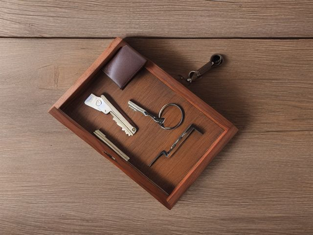

Entryway micro zone
The Landing Spot
The spot where pockets empty on the way in and refill on the way out.
One session: 30-45 min. most of it in Sort, because the paper is the slow part
The short version
- Sort. Empty the tray and the paper stack onto the floor
- Straighten. Put the tray where your hand actually opens on the way
- Shine. Lift the tray out and wipe under it, then wipe the tray itself
- Safety. The charging cable and the umbrella drip line must not share a spot
- Standardize. Photograph the cleared tray with the folder standing beside it, print it small
- Sustain. The folder rides to the sofa with you after dinner, one sheet at a time
Each step in full, with what to have on hand and what done looks like, below.
What done looks like
One tray holding keys and sunglasses, one wallet and one phone per adult, a single upright folder with fewer than ten sheets of paper standing in it, and bare surface on both sides of the tray.

Check these before you start
- Water and electricityWet umbrellas and rain-soaked sleeves drip onto whatever sits directly below the hooks. If the charging dock or a power strip is under that line, move it out of the drip.
- Burn or fireA phone dock, a lamp and a plug-in heater chained together behind the console is the overload that starts here. One dock, one outlet, nothing chained.
- FallA work bag parked on the floor beside the tray is the thing you go over in the dark with your arms full of shopping.
What to have on hand before you start
These are types of thing, not brands. If you already own something that does the job, that is the right one to use. Each says which pass needs it and what to watch out for.
- Streak-free glass and mirror cleaner
Clean glass, mirrors, and polished surfaces, in the Shine and Sustain passes.
Do not spray electronics directly. - Color-coded microfiber cloth set ×12
Wipe, dust, and dry surfaces, in the Shine pass.
Wash by use color; avoid fabric softener. - Neutral pH multi-surface cleaner
Routine cleaning of sealed surfaces, in the Shine and Sustain passes.
Verify surface compatibility; lock around children and pets. - Compact vacuum with attachments
Remove dust, crumbs, and debris, in the Shine pass.
Use appropriate attachment. - Keep, Relocate, Donate, Recycle, Trash container set ×5
Support rapid item routing during Sort, in the Sort pass.
Do not block exits. - Portable cleaning caddy
Transport and contain cleaning inputs, in the Straighten, Shine and Sustain passes.
Secure chemicals from children and pets. - Portable label maker
Create durable standardized labels, in the Standardize and Sustain passes.
Follow surface and adhesive guidance. - Removable write-on labels
Create temporary or adjustable visual controls, in the Standardize pass.
Test on delicate finishes.
Only if your drop zone has one: 5 more
Not every drop zone needs these. Each one is here because some do, and the reason is next to it.
- Umbrella Stand
Contain umbrellas vertically and allow drying, in the Straighten, Standardize and Sustain passes.
Do not overload; anchor wall-mounted or tall systems where required. - Jewelry and Valet Tray
Contain small personal items, in the Straighten, Standardize and Sustain passes.
Do not overload; anchor wall-mounted or tall systems where required. - Cable Management Kit
Secure and label device cords, in the Straighten, Standardize and Sustain passes.
Do not overload; anchor wall-mounted or tall systems where required. - Charging Dock
Create one controlled device charging home, in the Straighten, Standardize and Sustain passes.
Do not overload; anchor wall-mounted or tall systems where required. - Floor-material-compatible cleaner
Clean sealed hard floors, in the Shine and Sustain passes.
Match cleaner to floor material.
Which of these is true here?
Match what you are actually seeing in the drop zone to why it keeps happening, then start at the pass that fixes that, not the top of the list.
The folder is never under ten sheets, no matter how often I sort it
- Nothing that goes back on the surface has been given a verdict. Confirm in 30 seconds: Pick up one piece. If your first thought is a verb (pay, sign, call, decide) rather than a place, it needs a decision, not a home. If that checks out, start at Sort.
- I only open post on the days I have time, not the days it arrives. Confirm in 30 seconds: Name the moment it happens. If the answer is "when I get round to it", there is no trigger and it will not survive a bad week. If that checks out, start at Sustain.
- There is no agreement on when a folder counts as full. Confirm in 30 seconds: Ask two people what this surface should look like at bedtime. Two answers means there is no standard to keep. If that checks out, start at Standardize.
Keys, chargers and sunglasses land beside the tray, not in it
- The tray is not where my hand actually opens on the way in. Confirm in 30 seconds: Stand where you use it and count the steps to where it is kept. More than two is the wrong cabinet. If that checks out, start at Straighten.
- There is more landing here than the tray was ever built to hold. Confirm in 30 seconds: Put back only what belongs here. If it still will not close, or still stacks four deep, the capacity is the problem, not the habit. If that checks out, start at Sort.
The charging dock keeps ending up under the umbrella drip line
- The outlet behind the console already carries a lamp and a heater. Confirm in 30 seconds: Look for the four: a blade your hand would meet, weight above shoulder height, heat beside something that burns, and an unsafe placement near a child's reach. If that checks out, start at Safety.
- Nobody moved the dock once the drip line became obvious. Confirm in 30 seconds: Ask someone who does not live here to name what looks out of place. If they see it instantly and you had stopped noticing, this is the cause. If that checks out, start at Sort.
Only have 15 minutes? Empty the tray and the paper stack onto the surface, then give every sheet a verdict: act, file, or recycle, before anything goes back. Victory: One tray holds only keys and sunglasses, and no loose paper sits anywhere on the surface.
The six passes, in order
Work them in this order. Sorting after you have arranged things means arranging things you were about to remove.
Sort
Decide what stays. Everything else leaves the zone now.
Empty the tray and the paper stack onto the floor. Keys that open nothing, loyalty cards, dead batteries and last month's flyers leave now. Every piece of mail gets a verdict of act, file, or recycle before anything goes back on the surface.
Straighten
Give what stays a home, placed where the hand actually reaches.
Put the tray where your hand actually opens on the way in, not where the furniture happens to be. Keys and sunglasses in the tray, one upright folder for act-on paper, and the charger plugged in at the far end away from anything that drips.
Shine
Clean it, and use the cleaning to inspect what you cannot see when it is full.
Lift the tray out and wipe under it, then wipe the tray itself. Keys shed grit and coins leave a grey film that tells you exactly how long it has been since anyone did this.
Surface by surface, all 7 of them, with what to use on each.
Safety
Make the zone safe for everybody who uses it, including the shortest person.
The charging cable and the umbrella drip line must not share a spot. Check what else is on the outlet feeding the dock, because a lamp, a seasonal heater and a four-port charger on one strip is this room's usual overload.
Standardize
Write down the best way you know today, so it survives you forgetting.
Photograph the cleared tray with the folder standing beside it, print it small, and tape it inside the coat cupboard door at the height people glance while hanging a coat. The tray then teaches itself.
Sustain
Attach the reset to something that already happens, so it keeps itself.
The folder rides to the sofa with you after dinner, one sheet at a time, and each adult works their own. Slip shows from the doorway: a second pile beside the tray, or a folder too fat to stand up. Recovery is one five minute sitting with the recycling bin at your feet, not a re-sort of the surface. This zone drifts faster than anywhere else in the house because post arrives on the days nobody decides anything, so a quiet week is still an accumulating one.
The paper with no verdict
What you have been avoiding here is not the keys, it is the six sheets of paper you keep shifting from one end of the surface to the other. They stay because each needs a small unpleasant action: a form, a phone call, a payment. The rule is that nothing returns to the surface without a verdict, and there are only three: act, file, recycle. If it is act, it stands upright in the folder with the date written in the corner. When any item in that folder passes fourteen days, it stops being paperwork and becomes a decision. Do it tonight, or accept honestly that you never will and recycle it. Both of those are answers. Leaving it on the surface is not.
Cleaning it properly, surface by surface
Work down, not across. Whatever comes off a high surface lands on the one below it, so cleaning the floor first means cleaning it twice.
Carry these in with you. Streak-free glass and mirror cleaner; Neutral pH multi-surface cleaner; Floor-material-compatible cleaner; Color-coded microfiber cloth set; Compact vacuum with attachments; Portable cleaning caddy; Small detail brush (not in this zone's kit).
- The mirror or framed art above the console
Start high. Mist the streak-free glass and mirror cleaner onto a dry microfiber cloth rather than straight onto the glass, so it does not run down behind the frame, then wipe in one direction and buff dry with a second cloth. Dust the top edge of the frame with a dry cloth first. - The wall on either side of the console and the light switch plate
Wipe the wall flanking the console and the switch plate beside the door with a barely damp microfiber cloth, lifting the finger marks that build around the switch and the scuff where shoulders and bags brush past. Go gently on painted plaster and dry it after. - The console top on both sides of the tray
Clear everything off, dust or vacuum any grit loose, then wipe the whole surface with a cloth dampened with neutral pH multi-surface cleaner. Reach the back edge against the wall where dust packs into the seam. - The tray itself and the surface it was sitting on
Lift the tray right out. Wipe the ring of grey film off the console where it stood, then wash the tray in and out with the multi-surface cleaner, working a detail brush into the corners where key grit and coin dust collect. Dry it before the keys go back. - The upright folder and the loose papers in it
Take the folder out, tap the papers square on the surface to shed dust, and wipe the folder front and spine with a barely damp cloth. Dry paper only goes back into a dry folder. - The charging dock and its cable
Unplug it first. Wipe the dock body and the cradle with a dry or barely damp microfiber cloth, never a wet one, and run a dry detail brush through the port and along the cable to lift lint. Coil the cable loosely before it goes back. - The floor around and under the console legs
Vacuum the grit out from under the console and around each leg with the crevice attachment, then mop or wipe the sealed floor with the floor-material-compatible cleaner. Get right into the corner behind the legs where a work bag usually parks.
Inspect as you clean. Cleaning is the only time you see the zone empty, so use it.
- A brown water ring or a spreading stain on the wall or console top directly under the hooks, the sign that wet sleeves have been dripping in the same line for a while. Flag it.
- A charging cable with cracked, frayed, or hardened insulation, or a plug that shows a scorch mark or feels warm where it sits in the socket. Flag it.
- A power strip behind the console that feels warm to the touch or has yellowed or discoloured around a socket. Note it.
- A console leg or wall bracket that rocks or wobbles when you lean on the top. Flag it.
- Green or white crust building on the dock's metal contacts, which is corrosion from damp. Note it.
The standard that keeps it fixed
The surface holds the tray and the folder and nothing else, and keys never ride out of the house in a coat pocket that lives on a hanger.
Reset trigger. As you take your coat off, your hands are already full and already stopped. That is the moment everything in them goes into the tray.
The rest of the entryway, in working order
Each of these is one session on its own. Finish this zone before you open the next.
- The Landing Spot, you are here
- The Coats and Outerwear
- The Shoes and Boots
- The Bench or Console
- The Door, Mat, and Immediate Floor
The Entryway in full, with what each of the 5 zones is for
Related reading
- Is mail piling up on this exact surface?
- Still losing your keys here?
- Why this zone gets messy again
- Does everyone in the house agree what "done" looks like here?
- Does something in this zone actually get used somewhere else?
Questions people ask about this zone
- How long does it take to reset the drop zone?
- One session: 30-45 min, most of it in Sort, because the paper is the slow part.
- What does a finished drop zone look like?
- One tray holding keys and sunglasses, one wallet and one phone per adult, a single upright folder with fewer than ten sheets of paper standing in it, and bare surface on both sides of the tray.
- What is the hardest call to make in the drop zone?
- What you have been avoiding here is not the keys, it is the six sheets of paper you keep shifting from one end of the surface to the other. They stay because each needs a small unpleasant action: a form, a phone call, a payment. The rule is that nothing returns to the surface without a verdict, and there are only three: act, file, recycle. If it is act, it stands upright in the folder with the date written in the corner. When any item in that folder passes fourteen days, it stops being paperwork and becomes a decision. Do it tonight, or accept honestly that you never will and recycle it. Both of those are answers. Leaving it on the surface is not.
- How do you keep the drop zone from getting cluttered again?
- The surface holds the tray and the folder and nothing else, and keys never ride out of the house in a coat pocket that lives on a hanger. As you take your coat off, your hands are already full and already stopped. That is the moment everything in them goes into the tray.
- What do you need to clean the drop zone?
- Streak-free glass and mirror cleaner; Neutral pH multi-surface cleaner; Floor-material-compatible cleaner; Color-coded microfiber cloth set; Compact vacuum with attachments; Portable cleaning caddy; Small detail brush (not in this zone's kit).
- What do you clean first in the drop zone?
- the mirror or framed art above the console. Start high. Mist the streak-free glass and mirror cleaner onto a dry microfiber cloth rather than straight onto the glass, so it does not run down behind the frame, then wipe in one direction and buff dry with a second cloth. Dust the top edge of the frame with a dry cloth first.
- Is there a water and electricity risk in the drop zone?
- Wet umbrellas and rain-soaked sleeves drip onto whatever sits directly below the hooks. If the charging dock or a power strip is under that line, move it out of the drip.
- Is there a burn or fire risk in the drop zone?
- A phone dock, a lamp and a plug-in heater chained together behind the console is the overload that starts here. One dock, one outlet, nothing chained.
- Is there a fall risk in the drop zone?
- A work bag parked on the floor beside the tray is the thing you go over in the dark with your arms full of shopping.
- Why does the drop zone do this: The folder is never under ten sheets, no matter how often I sort it?
- Nothing that goes back on the surface has been given a verdict, so start at Sort; I only open post on the days I have time, not the days it arrives, so start at Sustain; There is no agreement on when a folder counts as full, so start at Standardize.
- Why does the drop zone do this: Keys, chargers and sunglasses land beside the tray, not in it?
- The tray is not where my hand actually opens on the way in, so start at Straighten; There is more landing here than the tray was ever built to hold, so start at Sort.
- Why does the drop zone do this: The charging dock keeps ending up under the umbrella drip line?
- The outlet behind the console already carries a lamp and a heater, so start at Safety; Nobody moved the dock once the drip line became obvious, so start at Sort.
Watch this zone
The same steps as above, done on camera, with captions. Nothing is sent to YouTube until you press play.
When you want it off the screen
Carry The Landing Spot into the room
The method above is complete and free. The Whole House Print Pack puts The Landing Spot and the other 113 micro zones on 684 printable cards, so the steps you just read are not stuck behind a phone screen while your hands are full.
The Print Pack, 19 dollarsOr draw a card free
If The Landing Spot keeps fighting back, the real problem usually sits somewhere else in the room. A one hour virtual consult is 250 dollars: we find the function, the friction and the root cause together, and you keep a written standard for the space. See what a consult covers.